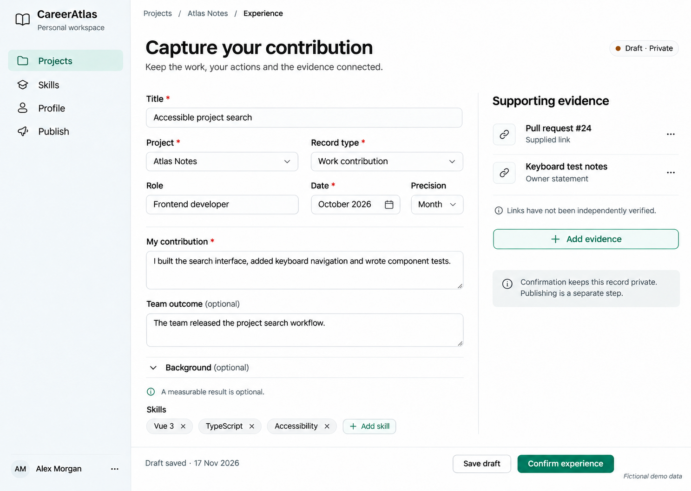
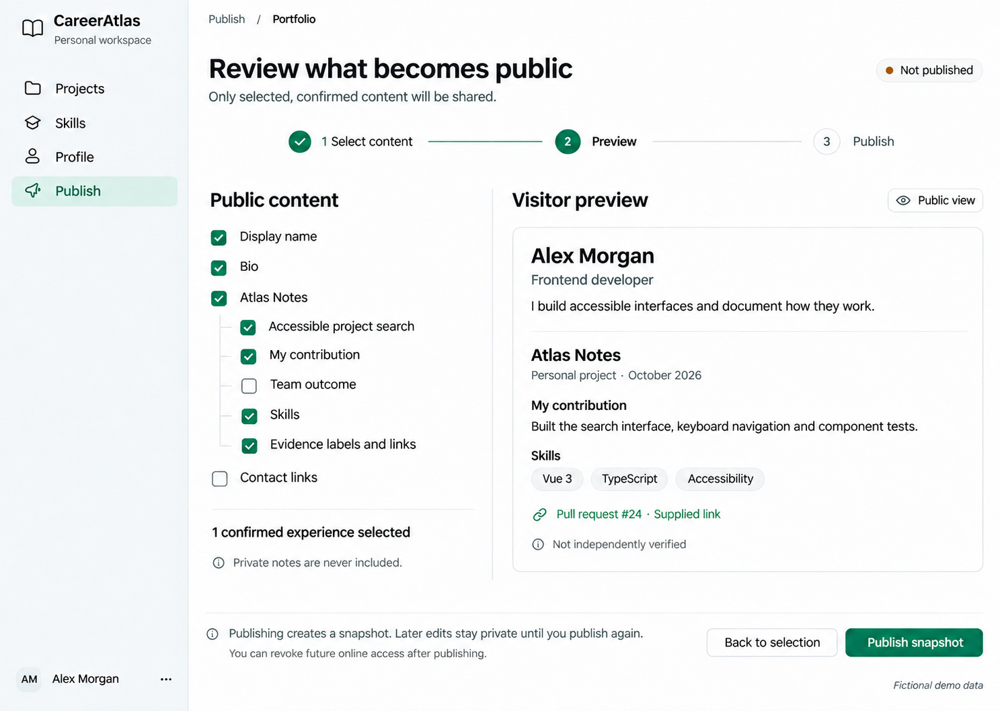
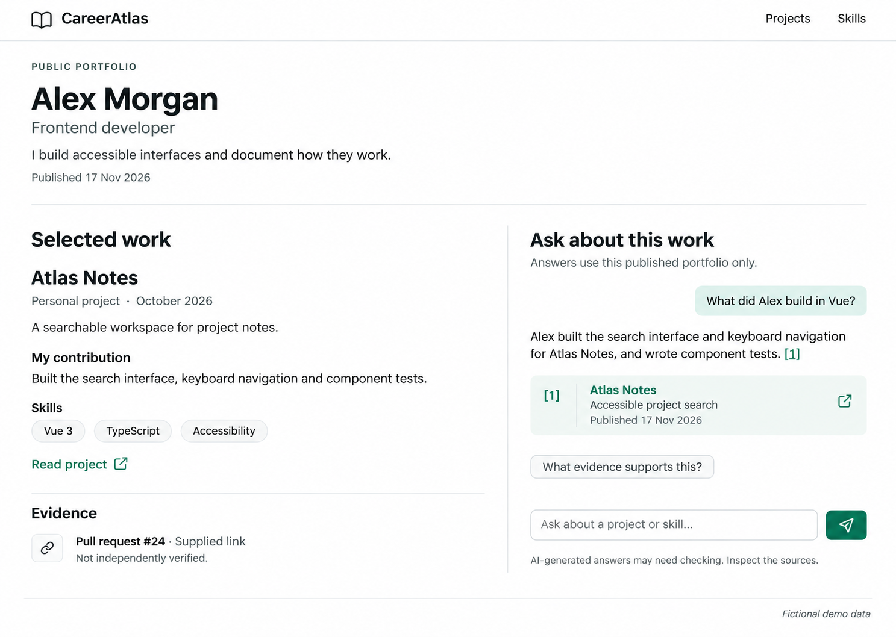

One system, three key moments
Private capture, deliberate publication, and public understanding share a restrained visual language.
01 / Capture your contribution

P0 · S3-01 to S3-03 · Saving or confirming does not publish the experience.
02 / Review what becomes public

P0 · S1-06 · The preview matches selected fields. Later source edits do not change the published snapshot.
03 / Read the work. Inspect the source.

P0 · S1-07 · Answers and citations stay within this publication's authorized scope.